Description:
Below is the technical documentation for the Bren Master of Environmental Data Science capstone project Developing a Data Pipeline for Kelp Forest Modeling completed in 2023 by myself, Jessica French, Erika Egg, and Javier Patrón.
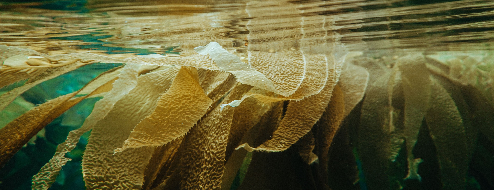
Abstract
Giant kelp (Macrocystis pyrifera) is an ecosystem engineer that creates complex vertical habitat by growing to approximately 50 m in dense forests. Healthy kelp forests are some of the most diverse ecosystems in the world that also protect coastlines from storms, provide nutrients to beaches, and giant kelp is a promising biofuel precursor that does not take up arable land or use freshwater to grow. Researchers are working to better understand nutrient utilization and cycling in this critical ecosystem and need comprehensive data on nutrient concentrations to further their research. Additionally, kelp aquaculture companies are working to show that giant kelp can be grown as a profitable biofuel precursor in the Santa Barbara Channel. In order to do this they need to grow kelp efficiently in areas that have suitable habitat. This project creates a synthesized data set that can be used and expanded on by researchers to make their data acquisition process more efficient. It also produces estimates of habitat suitability for giant kelp in the Santa Barbara Channel that kelp aquaculture organizations can use to supplement prior analyses and guide where to place future farms.
Executive Summary
Giant kelp (Macrocystis pyrifera) is a foundational species of canopy-forming kelp in the Santa Barbara Channel that provides the structure for some of the most diverse ecosystems in the world (Buschmann et al., 2007). Its tall stipes provide habitat for many species and protect coastlines from storms (Buschmann et al., 2007; Esgro & Ray, 2021). Declines in giant kelp abundance over the past decade have put these ecosystem services at risk and increased the urgency for research (Rogers-Bennett & Catton, 2019; Wernberg et al., 2013). It is also an attractive option for biofuel production because it can grow up to one meter per day and requires no fresh water or arable land (Cuba et al., 2022; Kerrison et al., 2015).
This project addressed the needs of two clients. The first was Ph.D student Natalie Dornan, who is researching nutrient utilization and cycling in giant kelp forests in the Santa Barbara Channel. Her goal is to create a nitrogen budget for the area to better understand the sources and sinks for nitrogen in the Santa Barbara Channel. To further her research she needs comprehensive data on nutrient concentrations in the Santa Barbara Channel. The second client was Ocean Rainforest, who is cultivating giant kelp in the Santa Barbara Channel to be used in biofuel production. They are working to prove that giant kelp can be a profitable biofuel precursor which means they need to be able to grow kelp efficiently. To do this they need to know where habitat is suitable for kelp.
There have been several long term monitoring efforts in the Santa Barbara Channel that have generated a lot of data on nutrient concentrations. This data is spread over many agency, organization, and research project websites, APIs, and data portals with each storing data in different file formats and providing access to the data in a slightly different way. In addition to access and file formats being inconsistent, observations are often at different spatial and temporal resolutions and in different data structures. For example one organization may provide point data collected quarterly in a text file while another provides raster images collected daily in a netCDF file. Putting this data into a common format so that all of the observations can be used together is tedious and time consuming.
This project addressed this problem by creating a synthesized data set of oceanographic factors that impact giant kelp growth designed to streamline research. Publicly available data on nutrient concentrations, sea surface temperature (SST), depth, seafloor habitat, and kelp coverage were obtained from the Santa Barbara Coastal Long Term Ecological Research (SBC LTER), National Oceanic and Atmospheric Administration (NOAA), United States Geological Survey (USGS), California Cooperative Oceanic Fisheries Investigations (CalCOFI), the California State Mapping Project, Earth Research Institute (ERI), National Aeronautics and Space Administration (NASA), and The Group for High Resolution Sea Surface Temperature (GHRSST) and compiled into one data set (Bell, Cavanaugh, Reuman, et al., 2021; Bell, Cavanaugh, & Siegel, 2023; CalCOFI Bottle Database, n.d.; Nearshore Benthic Habitat GIS for the Channel Islands Volume II - Mapped Areas, n.d.; Seafloor Mapping Lab at CSUMB: Data Library Southern California Data (Part II), n.d.; ERI, n.d.; Golden, 2013; JPL MUR MEaSUREs Project, 2015; NOAA National Centers for Environmental Information, 2022; Prouty & Baker, 2020a, 2020b; Washburn et al., 2022). All original data sets were vetted to ensure they had sufficient metadata, spatial coverage, and temporal coverage before being included in the project. Data sets were standardized with respect to resolution (spatial and temporal), units, extent, and coordinate reference system.
The standardized nutrient data, kelp area, kelp biomass (kelp biomass is derived from kelp area and does not represent separate observations), sea surface temperature, and depth were shared in both tabular (CSV) and image (raster) format. The first CSV contained the mean observed nutrient values and sea surface temperature values for each year and quarter with estimates of kelp area, kelp biomass, and depth added on. The raster format contained year and quarter mean raster bricks for each variable except depth and substrate which were considered constant. These raster bricks were used to create another CSV file that provided the same information in a more accessible format. By standardizing and combining the data it could be used together to address the need of Ocean Rainforest to know where habitat is most suitable for giant kelp in the Santa Barbara Channel.
Ocean Rainforest completed a habitat suitability analysis in 2018 for offshore locations (further than 3 nm from shore). As they move forward with placing additional kelp aquaculture farms in the Santa Barbara Channel they need an assessment of nearshore habitat suitability for giant kelp. To address this need, this project will produce updated estimates of habitat suitability for giant kelp with data from 2014 to 2022 and covering areas within 5 km of the Santa Barbara Coastline.
To model habitat suitability observations of phosphate and combined nitrate and nitrite for each year and quarter were interpolated using inverse distance weighting to generate a quarterly mean across all years for each nutrient. These estimates and depth were used to estimate habitat suitability for giant kelp in the Santa Barbara Channel using a maximum entropy species distribution modeling approach.
This resulted in quarterly estimates of habitat suitability for giant kelp on a scale of 0 to 1 that were filtered to locations that met the substrate needs of Ocean Rainforest. Additionally, the relative contribution of each variable to the estimates of habitat suitability (variable importance) was generated to guide future iterations of the model.
The synthesized data set created through this project will streamline research on nutrient cycling and utilization in kelp forests in the Santa Barbara Channel by making the data collected through various long term monitoring efforts available in one place. The model outputs will provide an updated estimate of habitat suitability for kelp in an area not covered by previous models. The variable importance will allow industry professionals and researchers to see what is most impacting giant kelp growth in the Santa Barbara Channel and help guide future research. This project was packaged into a well documented github repository with an accompanied google drive data hub to create a seamless pipeline for researchers and industry professionals to use in the future.
Problem Statement
Giant kelp (Macrocystis pyrifera) forests provide a wealth of ecosystem services such as protecting coastlines from storms, bringing nutrients to beaches, and creating habitat that increases biodiversity in the nearshore environment (Buschmann et al., 2007; Cuba et al., 2022; Esgro & Ray, 2021). Giant kelp has evolved to thrive in highly variable environments; it can withstand 15° C changes in sea surface temperatures, periods of limited nutrient availability, and even withstand severe storms adapting and recovering quickly (Cavanaugh et al., 2019). However, increasing frequency and severity of marine heat waves, El Niño events, and other environmental disturbances are pushing kelp to the limits of what it can withstand (Esgro & Ray, 2021; Rogers-Bennett & Catton, 2019; Wernberg et al., 2013). This became evident when a record breaking marine heat wave between 2014 and 2016 added to a severe El Niño, combined with a plague of sea star wasting disease that allowed kelp’s main predators, sea urchins, to flourish (Cavanaugh et al., 2019; Rogers-Bennett & Catton, 2019). This resulted in the decimation of kelp forests along the California coast with areas losing up to 90% of their kelp canopy (Cavanaugh et al., 2019).
This has motivated researchers and the kelp aquaculture industry to gain a better understanding of kelp ecology in a changing climate and to identify locations that could support kelp restoration projects or kelp farms. The clients for this project are seeking to do just that. Ph.D student Natalie Dornan is studying nutrient cycling and utilization in kelp forests with the goal of developing a spatiotemporal model of nitrogen in the Santa Barbara Channel. Additionally, the pioneering blue growth company Ocean Rainforest is working to make giant kelp a profitable biofuel precursor that can be grown in the Santa Barbara Channel. In order to accomplish their goals, they need data on oceanographic factors that impact kelp growth in the Santa Barbara Channel and estimates of locations that have suitable habitat for giant kelp.
There are many factors that impact habitat suitability for giant kelp. Among these are nutrient concentrations for nitrate, nitrite, ammonium, and phosphorus, sea surface temperature, and substrate type (Brzezinksi et al., 2013; Buschmann et al., 2007; Cavanaugh et al., 2019; Peters et al., 2019). While the nutrient and temperature requirements of naturally occurring kelp and cultivated kelp are the same, the substrate needs are not. Kelp farms, such as those operated by Ocean Rainforest, need soft substrate to place their infrastructure on so that it does not disturb natural kelp habitat or protected rocky reef habitat. Natural kelp typically attaches to and grows from rocky substrate. This creates a challenge in assessing where giant kelp habitat is suitable based solely on where it naturally occurs.
Data on oceanographic factors such as nitrogen and phosphorus concentrations, sea surface temperature, seafloor substrate, and ocean depth are available through several long term monitoring efforts in the Santa Barbara Channel. The challenge is that different data sources provide data in different formats, at different spatial and temporal resolutions, and stored and accessed in slightly different ways. Synthesizing the available data so that all of the observations can be used simultaneously will create the most complete picture possible of conditions in the Santa Barbara Channel and identify data gaps that can be addressed by future research.
The synthesized data set of oceanographic factors will then be used to meet the second challenge of identifying suitable habitat for giant kelp. Current models of habitat suitability that Ocean Rainforest uses were completed in 2018 and did not cover the nearshore environment. The model created through this project will provide predictions with data collected through 2022 and estimates of kelp habitat suitability within 5 km of shore. This updated model, when combined with maps of seafloor substrate, will provide needed information to the kelp aquaculture industry and researchers when exploring where to locate future projects.
Specific Objectives
Synthesize currently available data on kelp forest distribution and oceanographic factors in the Santa Barbara Channel into one standardized data set that can be easily used, reused, and updated by researchers and kelp farm industry professionals. After downloading the data set researchers can easily incorporate additional variables and more current data to meet their research needs.
Create a model of giant kelp habitat suitability in the Santa Barbara Channel that will provide an update to analyses completed in 2018, in an area not covered previously, and will account for the differing substrate needs of naturally occurring and cultivated kelp.
Summary of Solution Design
Objective 1: Synthesized Data Set
Data on kelp area, kelp biomass (derived from kelp area), depth, sea surface temperature (hereafter referred to as SST), nutrient concentrations, substrate, and regulatory boundaries were downloaded from open source data repositories and research projects. A summary of the source, original format, and final format is provided in Table S1.
Data that were collected over multiple years were filtered to observations over the 2014-2022 period. This time period was chosen because of the sharp declines in kelp coverage between 2014 and 2016 as well as 2022 being the most recent full year of data. All data were filtered spatially to observations made within the Santa Barbara Channel (Coordinates used to delimit the Santa Barbara Channel 33.85°- 34.59°N, 118.80°- 120.65°W) (Fig. 1). Only nutrient observations made in the top 10 m of water were included. Where multiple observations were made at different depths in the same location the mean of all points in the top 10 m of water were included. All data that did not have WGS 84 as the coordinate reference system were reprojected to WGS 84. Observations for variables that were spread across multiple data sets and/or multiple files were combined into one file. Multiple files from the same data set were combined into one file. This resulted in one file per data set for all variables that would be used in creating the synthesized data set in subsequent steps.

Nutrient observations taken on different temporal scales were aggregated to year and quarter (Quarter 1 = Jan - Mar, Quarter 2 = Apr - Jun, Quarter 3 = Jul - Sep, Quarter 4 = Oct - Dec). Where the same point was sampled more than once in one quarter the mean of the values was reported for that point in that year and quarter. All nutrient data set files were then combined by stacking the rows of each data set together for CSV export. Additionally nutrient observations were converted from point format to raster format at a resolution of 0.008° by assigning the value at that point to the grid cell it intersects for continuity with other data sets.
Data on kelp area and kelp biomass were extracted from a netCDF file and assembled into a data frame. This data frame was then converted into two rasterStacks. Values within these rasterStacks were aggregated by sum from the original resolution of 30 m to roughly the desired resolution and then resampled to the exact resolution of 0.008° (approximately 1 km). The original temporal resolution was year and quarter and was not changed. Depth estimates as of 2022 were resampled from 15 arcsecond resolution to 0.008°. SST data were aggregated from daily estimates to year and quarter by taking the mean of all daily estimates that were within the quarter for each grid cell and resampled to 0.008° resolution using the nearest neighbor method. The combined nutrient point observations were intersected with the kelp area, kelp biomass, depth, and SST rasters to estimate values for these variables at each point and exported in CSV format.
Point observations of nutrients were interpolated using inverse distance weighting with an inverse distance power of 1. Measurements of nitrate and nitrite were combined by summing to create total nitrogen measurement. Points were aggregated over all years by quarter to maximize the number of observations available to estimate the nutrient concentration. This assumes that nutrient concentrations in the same location in different years would be roughly the same, and is a notable limitation of this method. For phosphate and nitrogen the maximum distance a cell could be from a data point and still have a value estimated (hereafter referred to as the maximum distance parameter) was set to 0.008° (approx. 10 km) (Brzezinksi et al., 2013; Peters et al., 2019). The maximum distance parameter for ammonium was set to 0.04° because it is more spatially variable than phosphate and nitrogen (Brzezinksi et al., 2013; Peters et al., 2019). Values were estimated for cells within 5 km (Fig. 2) of the Santa Barbara coastline at a resolution of 1 km, however the estimate could be based on point values that were further away, up to the maximum distance parameter set for the nutrient being estimated.
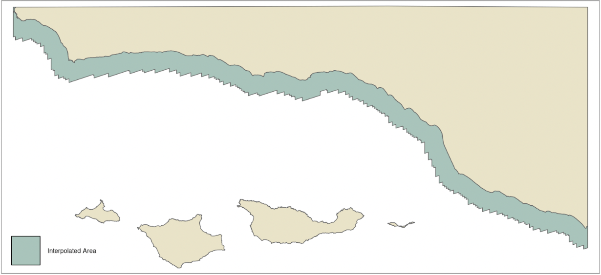
Year and quarter raster data for nutrients, SST, kelp area, and kelp biomass were converted to tabular format by assigning the value of each grid cell to a latitude and longitude within that grid cell. Estimates of depth as of 2022 were converted to tabular format in the same way and joined to the nutrient, SST, kelp area, and kelp biomass data. This was exported as a single file in CSV format.
Substrate data stored in a shapefile were reclassified to rock substrate, soft substrate, mixed substrate, and anthropogenic substrate based on the reported induration or description of each polygon. The reclassified data were then converted to raster at a resolution of 0.00003° (approximately 3.3 m). Substrate data stored as Esri layer files were loaded into QGIS and saved as GeoTIFF files. These rasters (riginal resolutions of 2 m, 3 m, or 5 m) were resampled using the nearest neighbor method to 0.00003° resolution. The resulting files were combined and exported in GeoTIFF format.
The final synthesized data set was provided in CSV and GeoTIFF rasterStack formats. The CSV format contained one file with the observed nutrient concentrations and SST aggregated to year and quarter, with estimates of kelp area, kelp biomass, and depth added for each point as described above. The GeoTIFF format contains a series of raster bricks where each brick contains the measurements for one variable and each layer in a stack represents a year and quarter. The variables contained in the series are kelp area, kelp biomass, nutrients, and SST. This series of raster stacks was combined in CSV format where each row represents the value of a cell at a year and quarter and each column represents a variable. The combined substrate file is provided separately because the observations are categorical with discrete boundaries and could not be resampled to 0.008° resolution and maintain accuracy of all substrate categories (The soft substrate category covers much larger continuous areas compared to hard, mixed, and anthropogenic and was converted to 0.008° resolution for analysis).
An additional sandy-bottom substrate raster was created at the 0.008° resolution level for later analyses. This was done by first reclassifying to sandy (1) and non-sandy (0) substrates and aggregating to a near 0.008° resolution by mean. The raster was resampled to the mask to get a perfect resolution of 0.008° by the nearest neighbor method. Then the raster was reclassified so cells with values less than 1 due to containing non-sandy cells were assigned 0, and cells with values of 1 remained at 1 – the sandy-bottom substrate.
Objective 2: Habitat Suitability Model
Once synthesized, this data set was used to model kelp habitat suitability in the Santa Barbara Channel via a maximum entropy species distribution model called Maxent (citation 12) – a pre-developed machine learning algorithm (Kass et al., 2023). This modeling approach was chosen because it allows the user to generate a predicted habitat suitability for a species based on continuous environmental variables, such as the GeoTIFF files created in the synthesized data set (Kass et al., 2023; Melo-Merino et al., 2020; Phillips et al., 2017; Watt, 2018). Although the input kelp area was remotely sensed, it did not fully cover the area of interest, and growing kelp that hadn’t reached the surface would not be detected (Cavanaugh et al., 2021). Therefore, it was assumed that the measurements of kelp area represented definitive presence but not definitive absence, and thus was appropriate for a presence-only model like Maxent (Kass et al., 2023; Watt, 2018).
Maxent outputs a probability distribution heatmap of predicted habitat suitability for the species of interest (Elith et al., 2011; Kass et al., 2023; Melo-Merino et al., 2020). Habitat suitability for giant kelp was predicted for each quarter independently to account for drastic seasonal changes in ocean nutrient distribution (Brzezinksi et al., 2013; Buschmann et al., 2007; Peters et al., 2019). Predictions were generated for a 1 km resolution grid that extended 5 km from the Santa Barbara coastline.
To prepare the kelp occurrence data for the model, the kelp area was averaged over the time period of interest (2014-2022) by quarter. Then it was converted from a continuous raster to a data frame where the kelp area of each cell was assigned to a row and a point within the cell was assigned as the latitude and longitude (Watt, 2018). A value greater than zero was treated as an observation of presence. Additionally, the interpolated nitrogen, interpolated phosphate, and depth were combined in folders such that each tif file represented a variable and each folder represented a quarter.
The interactive web application Wallace was used to perform the initial runs for Maxent modeling and model selection (Kass et al., 2023). The application uses the maxent and ENMeval packages available in R to run different versions of the model and calculate evaluation metrics. Wallace also makes all code used in the modeling process available to download so that the process is fully reproducible. This reproducible code was saved and updated to be contained in the kelpGeoMod pipeline (Kass et al., 2023; Melo-Merino et al., 2020).
In order to find the model with the best performance, a k = 4 checkerboard spatial partition was used to first train then test the data. Linear, Quadratic, Hinge, and Product feature classes were allowed to be applied to the data and regularization multipliers between 0.5 and 4.5 at a step value of 0.2 were used. Clamping was not employed, so the model was not constrained to environmental values seen in the training data.
The model with the best predictive performance for all quarters based on minimizing the AIC had a regularization parameter of 0.5 and allowed linear and quadratic feature classes to be applied to the data. The raw output of maxent modeling is a ratio of the probability density of covariates across the landscape of interest with kelp occurrence over the probability density of covariates across the whole landscape of interest (Elith et al., 2011).In this form the Maxent output is challenging to interpret intuitively so a cloglog transformation was applied to the model raw output so that it could be interpreted as predicted habitat suitability where each grid cell had a value between 0 and 1 (Elith et al., 2011; Kass et al., 2023). This type of transformation is recommended for interpretability in the Maxent and Wallace documentation (Kass et al., 2023; Phillips et al., 2017).
The outputs were exported as GeoTIFF files and used to create heat maps that combine predicted habitat suitability, and substrate type in the Santa Barbara Channel. This will allow Ocean Rainforest and researchers to see areas where in the Santa Barbara Channel habitat is suitable for kelp where it does not occur naturally. Combining this with maps of seafloor substrate will allow Ocean Rainforest to identify potential areas for kelp farm placement that will not disturb existing kelp habitat and have the soft seafloor substrate that is required for farm infrastructure. Similarly it will allow researchers to identify areas of potential rocky reef habitat where kelp restoration projects are most likely to be successful. The maps created were exported as GeoTIFF files.
Additionally, metrics of feature importance were pulled from the model outputs. This information will be useful to Ocean Rainforest as they consider what variables are most important to have in a given location when siting kelp aquaculture farms.
Products and Deliverables
Synthesized Data Set
The synthesized data set was provided in two formats to maximize flexibility of use and to align with the various formats of the original data. The first is a CSV file that contains all of the observed nutrient values from the original data sets and observed SST with estimates of kelp area, kelp biomass, and depth from the raster cell that the observation intersects aggregated to year and quarter. This data set brings together observations of nutrient concentrations from CalCOFI, ERI, SBC LTER, and USGS in a single file (Fig. 3) (CalCOFI Bottle Database, n.d.), ERI (ERI, n.d.), SBC LTER (Bell, Cavanaugh, Reuman, et al., 2021; Washburn et al., 2022). Adding estimates of kelp area, kelp biomass, and depth will make it easier to investigate relationships between nutrient concentrations and kelp forest cover. This data set is available for viewing or to download at this link.

The second format of the synthesized data set was a series of GeoTIFF raster stacks at 0.008° resolution. The data for each variable; kelp area (Fig. 4), kelp biomass, SST (Fig. 5), nitrogen (Fig. 6), ammonium, and phosphate, were represented by a series of raster bricks where each layer contained the estimates for each year and quarter.
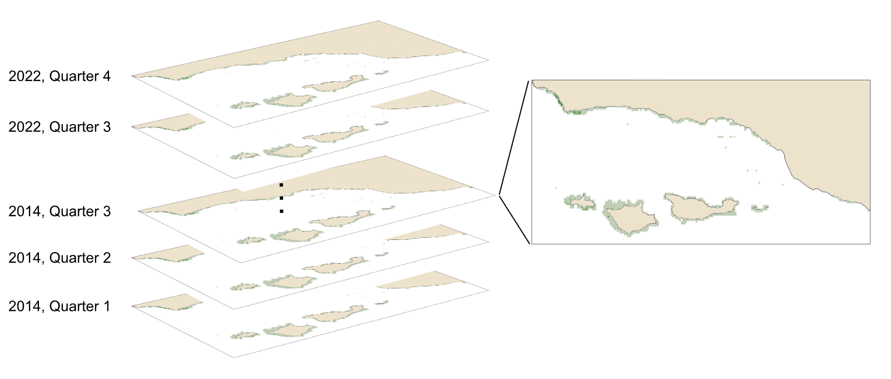


In addition to the series of raster bricks, estimates of depth (Fig. 7) and substrate (Fig. 8) observations were provided as GeoTIFF raster layers. Depth was provided at a resolution of 0.008° and substrate at a resolution of 0.00003°.


Model Outputs
In order to model habitat suitability for giant kelp within 5 km of the Santa Barbara Coastline, nutrient observations were interpolated as described above resulting in quarterly mean raster layers of nitrogen (Fig. 9), phosphate (Fig. 10), and ammonium (Fig. 11). A comparison of the root mean square error (RMSE) for each of these layers was estimated and is provided in tables (Table 1, Table 2, and Table 3).
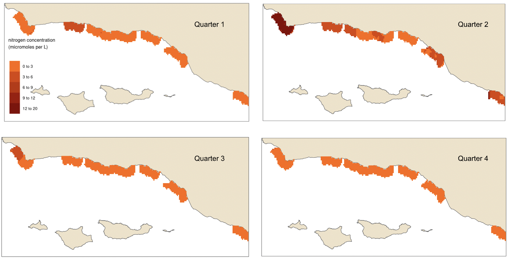

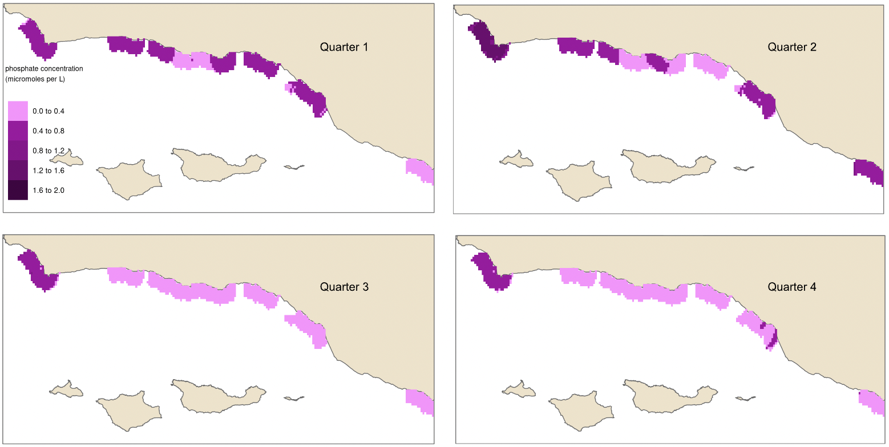

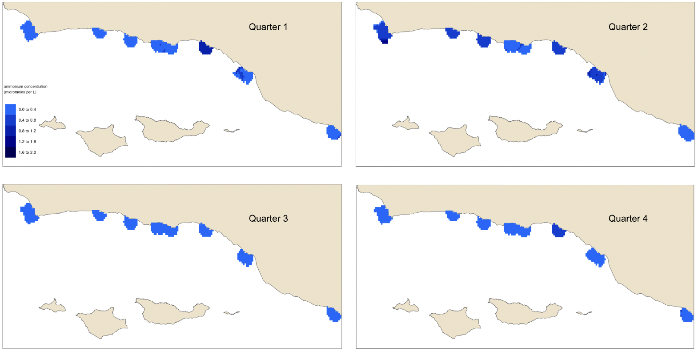

Estimates of habitat suitability for giant kelp were provided for each quarter at 0.008° resolution on a scale of 0 to 1. Estimates for each quarter were filtered to determine habitat suitability in areas that have soft substrate. A comparison of these estimates for each quarter are provided below (Fig. 12, Fig. 13, Fig. 14, Fig. 15). Additionally, variable importance was determined for each quarter and is shown in tables (Table 4, Table 5, Table 6, Table 7). The estimates of habitat suitability generally showed higher habitat suitability near the coast that was variable throughout the year. The variable importance showed that depth was primarily driving habitat suitability with nitrogen concentration being the second most important.

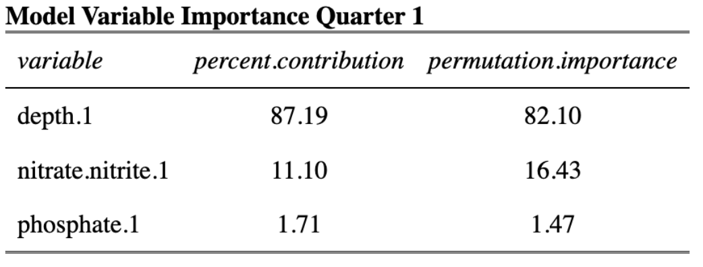
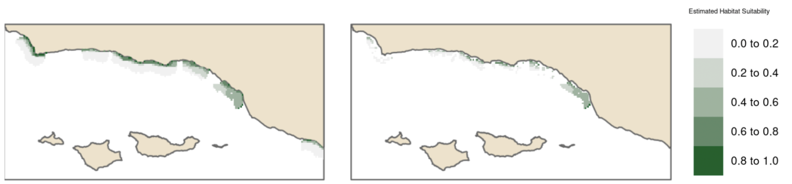
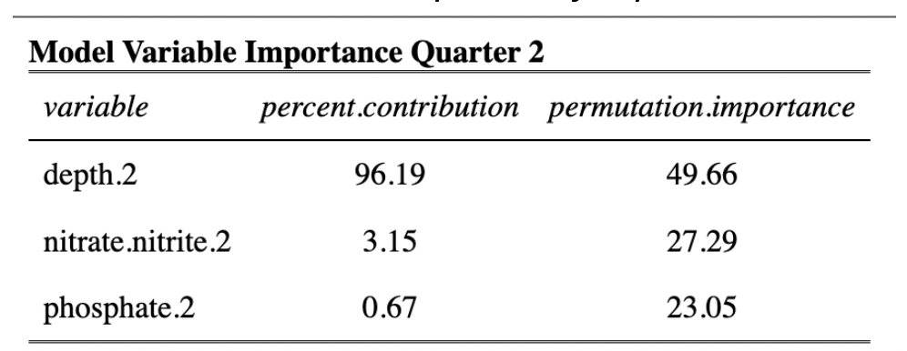

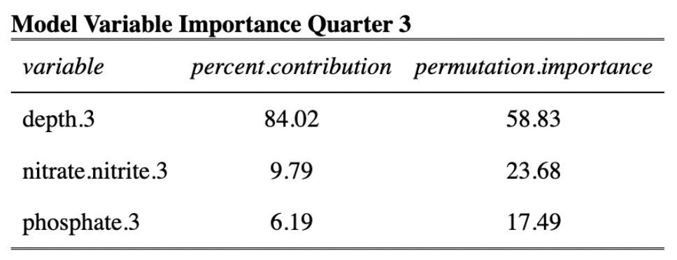
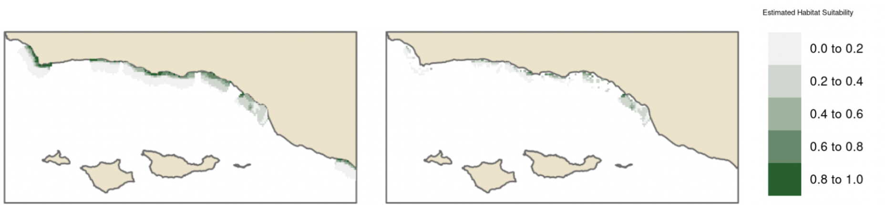

Data pipeline
In order to make this project reproducible and easy for the clients to continue in the future, all of the code used to create each data product and the model results is provided in an open source GitHub repository (link). To aid others in navigating the project a comprehensive user guide (link) and project schematic were also created and made publicly available. The combination of the GitHub repository, user guide, and project schematic are the data pipeline that will make it possible for future users to use and build upon the project.
Summary of Testing
Data Testing
Tests were performed to ensure that each raster or shape met the following criteria after completing the data cleaning process established in the project repository:
| Data type | Test |
|---|---|
| Raster | CRS = WGS84 |
| Raster | Extent = (xmin = -120.65, xmax = -118.80, ymin = 33.85, ymax = 34.59) |
| Raster | Resolution = 0.008 x 0.008 |
| Raster | Origin = -0.002, 0.002 |
| Raster | SST between 0° and 100° Celsius |
| Raster | Nutrients >= 0 |
| Vector | CRS = WGS84 |
| Vector | At least one data point within (xmin = -120.65, xmax = -118.80, ymin = 33.85, ymax = 34.59) |
| Vector | SST, between 0° and 100° Celsius |
| Vector | Nutrients >= 0 |
These tests ensure the success of the data cleaning process and provide a way for future users to check that any data they update is compatible with the synthesized data set and existing code.
Model
The root mean squared error (RMSE) of each interpolated layer used as inputs to the model was calculated to compare to the RMSE of the underlying data. The performance of the species distribution model was tested using the checkerboard 2 spatial partitioning method with the ENMeval package in R. This allowed the giant kelp occurrence data to be split into training and test data sets within the modeling process.
User Documentaion
All code used in this project was documented in R script and RMarkdown files. Each file contains information such as a description of the purpose of the code, the source of the data files used, and thorough code comments explaining each operation. Folders in our GitHub repository contain README.txt files with brief overviews of the contents within.
Relevant metadata for each raw data file were compiled and used to create README.txt files for each data set used. Metadata includes information on the abstract, methods, spatial coverage/resolution, temporal coverage/resolution, descriptions for variables used, links to the original data source, and contact information for associated researchers. Attribute descriptions for each data set when applicable or useful were compiled and also added to the applicable README.txt file. For raw data sets, we did not include attribute information, as in most cases it could be found by looking at the original data sources and often there were many attributes not used in the scope of our project. A similar process was completed for all intermediate and analysis data created throughout the project. README.txt files are included in each data-related folder when applicable.
A README.md for the overall project repository contains an overview of key information and summarizes how to use the repository. A user guide, in both pdf and txt format, is available here). This guide describes how the raw data types were accessed, cleaned, synthesized and prepared for modeling. It also provides guidance for users to add their own data and prepare it for Maxent modeling if they wish. Moreover, it describes the process for synthesizing the final data set and generating the final model and visualizations. This will ensure that future users will be able to incorporate their own data into the data set and explore their own models.
Archive Access
All of the data sets used in this project are open-source and available for public use through each research project, organization, and agency website, API, or website. The data products created through this project are also publicly available on Google Drive at this link. To facilitate data sharing and reuse, detailed README files with access and functionality information across all of our files were included. The final synthesized and standardized data sets, as well as the species distribution model outputs, were made available in both GeoTIFF and CSV formats. All code used to create the datasets and model outputs is available on the project’s GitHub repository available here. This combined with a comprehensive user guide and project schematic will make this project easily reproducible and flexible for future users.
Furthermore, the final product and data set were published under the Creative Commons Zero (CC0) intellectual property laws to enable public use. This was done to promote transparency, facilitate data sharing, and enable external users, such as researchers, stakeholders, and kelp farmers, to access and use our project’s data.
Acknowledgements
We acknowledge the Bren School of Environmental Science & Management’s Master’s of Environmental Data Science program at the University of California Santa Barbara for funding this synthesis project. We would also like to express our gratitude to our clients, Courtney Schatzman from Ocean Rainforest and Natalie Dornan from UCSB interdepartmental Graduate Program in Marine Science (IGPMS), as well as Sidney Gerst and Kirby Bartlett for providing user information, Jeff Massen for user testing and being the main contact as a kelp farmer, and Daphne Virlar-Knight from NCEAS for helping us explore different options for MaxEnt modeling. We are also grateful to Tamma Carleton, Shubhi Sharma and Kevin Winner for their expertise and guidance in statistics and species distribution modeling. Lastly, we are grateful to Dr. Li Kui and Carrie Bretz for their assistance in accessing and processing data from the SBC LTER and Seafloor Mapping Lab at California State University, Monterey Bay.
References
Bell, T., Cavanaugh, K., Reuman, D., Castorani, M., Sheppard, L., & Walter, J. (2021). SBC LTER: REEF: Macrocystis pyrifera biomass and environmental drivers in southern and central California (Version 1) [Data set]. Environmental Data. https://doi.org/10.6073/pasta/27e795dee803493140d6a7cdc3d23379
Bell, T., Cavanaugh, K., & Siegel, D. (2023). SBC LTER: Time series of quarterly NetCDF files of kelp biomass in the canopy from Landsat 5, 7 and 8, since 1984 (ongoing) (Version 20) [Data set]. Environmental Data Initiative. https://doi.org/10.6073/pasta/41f330ccf66fa8c05fc851862e69b1da
Brzezinksi, M., Reed, D., Harrer, S., Rassweiler, A., Melack, J., Goodridge, B., & Dugan, J. (2013). Multiple Sources and Forms of Nitrogen Sustain Year-Round Kelp Growth on the Inner Continental Shelf of the Santa Barbara Channel. Oceanography, 26(3), 114–123. https://doi.org/10.5670/oceanog.2013.53
Buschmann, A., Graham, M., & Vásquez, J. (2007). Global Ecology of the Giant Kelp Macrocystis (pp. 39–88). https://doi.org/10.1201/9781420050943.ch2
CalCOFI Bottle Database. (n.d.). [Data set]. Retrieved June 8, 2023, from https://calcofi.org/data/oceanographic-data/bottle-database/
Cavanaugh, K. C., Bell, T., Costa, M., Eddy, N. E., Gendall, L., Gleason, M. G., Hessing-Lewis, M., Martone, R., McPherson, M., Pontier, O., Reshitnyk, L., Beas-Luna, R., Carr, M., Caselle, J. E., Cavanaugh, K. C., Flores Miller, R., Hamilton, S., Heady, W. N., Hirsh, H. K., … Schroeder, S. B. (2021). A Review of the Opportunities and Challenges for Using Remote Sensing for Management of Surface-Canopy Forming Kelps. Frontiers in Marine Science, 8. https://www.frontiersin.org/articles/10.3389/fmars.2021.753531
Cavanaugh, K. C., Reed, D. C., Bell, T. W., Castorani, M. C. N., & Beas-Luna, R. (2019). Spatial Variability in the Resistance and Resilience of Giant Kelp in Southern and Baja California to a Multiyear Heatwave. Frontiers in Marine Science, 6. https://www.frontiersin.org/articles/10.3389/fmars.2019.00413
Cuba, D., Guardia-Luzon, K., Cevallos, B., Ramos-Larico, S., Neira, E., Pons, A., & Avila-Peltroche, J. (2022). Ecosystem Services Provided by Kelp Forests of the Humboldt Current System: A Comprehensive Review. Coasts, 2(4), 259–277. https://doi.org/10.3390/coasts2040013
Elith, J., Phillips, S. J., Hastie, T., Dudík, M., Chee, Y. E., & Yates, C. J. (2011). A statistical explanation of MaxEnt for ecologists. Diversity and Distributions, 17(1), 43–57. https://doi.org/10.1111/j.1472-4642.2010.00725.x
ERI. (n.d.). Plumes & Blooms [Data set]. Retrieved June 8, 2023, from http://www.oceancolor.ucsb.edu/plumes_and_blooms/
Esgro, M., & Ray, J. (2021). For Protecting and Restoring California’s Kelp Forests (p. 19).
Golden, N. E. (2013). California State Waters Map Series Data Catalog: U.S. Geological Survey Data Series 781 [Data set]. U.S. Geological Survey. https://doi.org/10.3133/ds781
JPL MUR MEaSUREs Project. (2015). GHRSST Level 4 MUR Global Foundation Sea Surface Temperature Analysis (4.1) [Data set]. https://doi.org/10.5067/GHGMR-4FJ04
Kass, J. M., Pinilla-Buitrago, G. E., Paz, A., Johnson, B. A., Grisales-Betancur, V., Meenan, S. I., Attali, D., Broennimann, O., Galante, P. J., Maitner, B. S., Owens, H. L., Varela, S., Aiello-Lammens, M. E., Merow, C., Blair, M. E., & Anderson, R. P. (2023). wallace 2: A shiny app for modeling species niches and distributions redesigned to facilitate expansion via module contributions. Ecography, 2023(3), e06547. https://doi.org/10.1111/ecog.06547
Kerrison, P. D., Stanley, M. S., Edwards, M. D., Black, K. D., & Hughes, A. D. (2015). The cultivation of European kelp for bioenergy: Site and species selection. Biomass & Bioenergy, 80, 229–242. https://doi.org/10.1016/j.biombioe.2015.04.035
Melo-Merino, S. M., Reyes-Bonilla, H., & Lira-Noriega, A. (2020). Ecological niche models and species distribution models in marine environments: A literature review and spatial analysis of evidence. Ecological Modelling, 415, 108837. https://doi.org/10.1016/j.ecolmodel.2019.108837
Nearshore Benthic Habitat GIS for the Channel Islands Volume II - Mapped Areas. (n.d.). [Data set]. Retrieved June 8, 2023, from https://pubs.usgs.gov/of/2005/1170/catalog.html
NOAA National Centers for Environmental Information. (2022). ETOPO 2022 15 Arc-Second Global Relief Model. NOAA National Centers for Environmental Information [Data set]. DOI: https://doi.org/10.25921/fd45-gt74
OpenAI. “ChatGPT.” https://openai.com/blog/chat-gpt/
Peters, J. R., Reed, D. C., & Burkepile, D. E. (2019). Climate and fishing drive regime shifts in consumer-mediated nutrient cycling in kelp forests. Global Change Biology, 25(9), 3179–3192. https://doi.org/10.1111/gcb.14706
Phillips, S. J., Anderson, R. P., Dudík, M., Schapire, R. E., & Blair, M. E. (2017). Opening the black box: An open-source release of Maxent. Ecography, 40(7), 887–893. https://doi.org/10.1111/ecog.03049
Prouty, N. G., & Baker, M. C. (2020a). CTD profiles and discrete water-column measurements collected off California and Oregon during NOAA cruise RL-19-05 (USGS field activity 2019-672-FA) from October to November 2019 (ver. 2.0, July 2022) [Data set]. U.S. Geological Survey. https://doi.org/10.5066/P9JKYWQU
Prouty, N. G., & Baker, M. C. (2020b). CTD profiles and discrete water-column measurements collected off California and Oregon during NOAA cruise SH-18-12 (USGS field activity 2018-663-FA) from October to November 2018 (ver. 3.0, July 2022) [Data set]. U.S. Geological Survey. https://doi.org/10.5066/P99MJ096
Rogers-Bennett, L., & Catton, C. A. (2019). Marine heat wave and multiple stressors tip bull kelp forest to sea urchin barrens. Scientific Reports, 9(1), Article 1. https://doi.org/10.1038/s41598-019-51114-y
Seafloor Mapping Lab at CSUMB: Data Library Southern California Data (Part II). (n.d.). [Data set]. Retrieved June 8, 2023, fromhttp://seafloor.otterlabs.org/SFMLwebDATA_s.htm
Washburn, L., Brzezinksi, M., Carlson, C., & Siegel, D. (2022). SBC LTER: Ocean: Ocean Currents and Biogeochemistry: Nearshore water profiles (monthly CTD and chemistry), ongoing since 2000 (Version 27) [Data set]. Environmental Data Initiative. https://doi.org/10.6073/pasta/8b74750eed1af2b987e02b4b466e12e7
Watt, D. (2018, October 9). Preparing Data for MaxEnt Species Distribution Modeling Using R. Azavea. https://www.azavea.com/blog/2018/10/09/preparing-data-for-maxent-species-distribution-modeling-using-r/
Wernberg, T., Smale, D. A., Tuya, F., Thomsen, M. S., Langlois, T. J., de Bettignies, T., Bennett, S., & Rousseaux, C. S. (2013). An extreme climatic event alters marine ecosystem structure in a global biodiversity hotspot. Nature Climate Change, 3(1), Article 1. https://doi.org/10.1038/nclimate1627
Appendix I: Supplemental Figures and Tables
Table S1. Summary of key information related to the raw data sets used
| Data set name | Source | Variable | Original Format | Final Format(s) |
|---|---|---|---|---|
| File | Resolution | File | Resolution | |
| SBC LTER: Time series of quarterly NetCDF files of kelp biomass in the canopy from Landsat 5, 7 and 8, since 1984 (ongoing) | Santa Barbara Coastal Long Term Ecological Research | Kelp area/biomass | netCDF
|
30 m x 30 m Quarterly |
| SBC LTER: REEF Macrocystis pyrifera biomass and environmental drivers in southern and central California | Santa Barbara Coastal Long Term Ecological Research | Nitrate | CSV
|
Points Quarterly |
| SBC LTER: Ocean: Ocean Currents and Biogeochemistry: Nearshore water profiles | Santa Barbara Coastal Long Term Ecological Research | Nitrate + nitrite, Phosphate, Ammonium
|
Text
|
Points Monthly |
| ETOPO Global Relief Model 2022 (Bedrock 15 arcseconds) | National Oceanic and Atmospheric Administration | Ocean depth, | GeoTIFF | 15 arcseconds |
| Water-column environmental variables and accompanying discrete CTD measurements collected off California and Oregon during NOAA cruise SH-18-12 | United States Geological Survey | Nitrate + Nitrite, phosphate
|
CSV
|
Points Annual (measurements taken in fall) |
| California Cooperative Oceanic Fisheries Investigations – Bottle Database | California Cooperative Oceanic Fisheries Investigations | Nitrate, nitrite, NItrate + Nitrite ammonia, phosphate |
CSV
|
Points Quarterly |
| Plumes and Blooms | Earth Research Institute | Nitrite, Nitrate + Nitrite , phosphate |
CSV
|
Points Monthly |
| GHRSST Level 4 MUR Global Foundation Sea Surface Temperature Analysis (v4.1) | National Aeronautics and Space Administration and The Group for High Resolution Sea Surface Temperature | Sea surface temperature | netCDF
|
0.01° x 0.01° Daily |
| California State Waters Map Series Data Catalog | United States Geological Survey | Substrate | Shape file | |
| Nearshore Benthic Habitat GIS for the Channel Islands National Marine Sanctuary and Southern California Fisheries Reserves Volume II | United States Geological Survey | Substrate | Shape file | |
| Southern California Data | California State Mapping Project | Substrate | Esri layer
|
2 m x 2 m 3 m x 3 m 5 m x 5 m |
| California County Boundaries | California Open Data Portal | Land boundaries | Shape file |
Table S2. Capstone deliverables, descriptions and applications
| Deliverable | Description | File Name and Format |
|---|---|---|
| Synthesized Data Set | A CSV file containing all of the observed nutrient values from the original data sets, observed SST, and kelp area and biomass of the raster cell that the observation intersects aggregated to year and quarter. A series of GeoTIFF raster bricks containing kelp area, kelp biomass, SST, and nutrients for each year and quarter at 0.008° resolution.
An estimate of depth at 0.008° resolution as of 2022. A CSV file containing the values in the GeoTIFF raster bricks with each row representing a cell at one year and quarter. |
observed-nutrients-synthesized.csv
kelp-area-brick.tif kelp-biomass-brick.tif nitrate-nitrite-brick.tif phosphate-brick.tif sst-brick.tif ammonium-brick.tif depth.tif full-synthesized.csv |
| Habitat Suitability Map | Quarterly estimates of habitat suitability for giant kelp in all substrate types and for soft substrate only. | maxent-quarter-1-output.tif maxent-quarter-1-output.tif maxent-quarter-1-output.tif maxent-quarter-1-output.tif
substrate-masked-brick.tif |
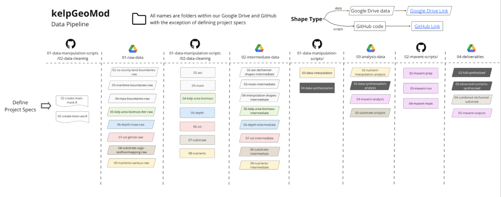
Citation
@online{egg, jessica french, javier patrón, elke windschitl2023,
author = {Egg, Jessica French, Javier Patrón, Elke Windschitl, Erika},
title = {Developing a {Data} {Pipeline} for {Kelp} {Forest}
{Modeling}},
date = {2023-07-02},
url = {https://elkewind.github.io/posts/2023-07-02-kelpGeoMod},
langid = {en}
}